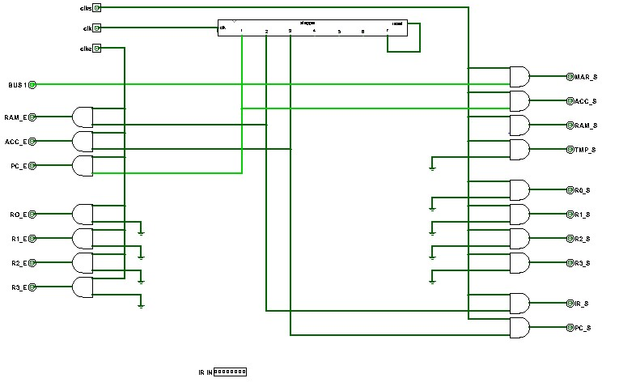

Fetch
Sections 13.5 – 13.8 | Estimated time: ~1 hour, with the video
13.5 Three transfers
Last week steps 1 to 3 of your control table were empty, and you filled them by setting the ir pin while the stepper passed through them. They belong to fetch: getting the next instruction out of RAM and into the IR. With the PC, the IR and the RAM on the bus, fetch is three transfers:
| Step | Drives the bus | Captures | Effect |
|---|---|---|---|
| Loading the table… | |||
Follow the first instruction of this week’s program. The PC holds 0 and RAM byte 0 holds 10110010:
- Step 1. The PC puts
00000000on the bus. The MAR captures it, so the RAM now selects byte 0. In the same set quarter ACC captures the ALU’s output, which is00000001— the next section explains why. - Step 2. The RAM puts byte 0,
10110010, on the bus. The IR captures it. The control unit is now looking atNOT R0, R2. - Step 3. ACC puts
00000001on the bus. The PC captures it. The PC now points at byte 1, the next instruction.
Then steps 4 to 6 execute NOT R0, R2 exactly as your Week 11 control unit did, and the stepper wraps round to step 1 — with the PC on 1.

BUS 1, PC_E, MAR_S and ACC_S high. Enables on the left, gated with clke; sets on the right, gated with clks — the same layout as your Week 11 control unit.13.6 PC + 1 without an adder of its own
Real processors give the program counter its own small adder. Yours does not need one. At step 1 three things are already true:
- The bus is the ALU’s A input (Week 10), and at step 1 the bus is the PC.
bus1is high, so BUS1 ignores TMP and hands the ALU’s B input00000001. This is the reason BUS1 has existed since Week 10, when you were told it was for “PC + 1, later”.- The opcode lines are 000, ADD, because Week 11 gated them with
step5AND ALU. At every other moment the ALU adds. Carry-in is still 0.
So the ALU’s output at step 1 is PC + 1, and all the control unit has to do is raise acc_s to keep it.
Why ACC, and not straight into the PC? At step 1 the PC is driving the bus. If it also captured the ALU’s output, its new value would appear on the bus, become the ALU’s A input, come out one bigger, and be captured again, round and round for as long as the set pulse lasts. It is the loop from Week 10 that ACC exists to break, and fetch uses ACC to break it: ACC holds PC + 1 through step 2, and gives it back to the PC at step 3.
At step 1 the MAR and ACC capture in the same set quarter, from different places. The MAR takes the bus; ACC takes the ALU’s output, which is computed from the bus. Neither drives anything, so there is still one driver — the PC — and nothing collides.
13.7 Fetch cannot look at the IR
Every instruction is fetched by the same three steps. That is not a design preference; it is forced. The control unit decides what to do from the IR, and until step 2 the IR holds the previous instruction. Worse, during step 2’s set quarter the IR is a transparent latch with its s high: its output, and so the control unit’s ir input, changes from the old instruction to the new one partway through the step.
Look at the fetch rows again: none of them mentions a class. pc_e is step1 AND clk_e, full stop. No IR bit reaches a fetch gate, so it does not matter what the IR says, or that it changes, during steps 1 to 3. The class lines only start to matter at step 4, by which time the IR has held still for a whole step.
Here is your whole control table after this week. Five lines are new, and three of last week’s lines gain a fetch term — each still an OR of (step AND class) terms, as Week 11 promised every line would be.
| Line | Gated with | = OR of these terms | Does |
|---|---|---|---|
| Loading the table… | |||
In gates, the changes are small: five new outputs, each one AND of a step and clk_e or clk_s; and three new OR inputs, on acc_s, acc_e and bus1.
13.8 Watch it: the fetch-only CPU
Last week this video was a preview. Now it is what you are building. Your instructor wires his fetch control unit to a CPU that does nothing but fetch, and walks steps 1 to 3 one click at a time: the PC’s 0 goes to the MAR while the ALU makes 1 for ACC; RAM byte 0 goes to the IR; ACC’s 1 goes back to the PC. About thirteen and a half minutes.
Transcript: fetch cycle
Loading transcript…
- The program counter’s set is tied to 1 and its input pin is pull-down, so whenever nothing drives the bus it drops back to 0 (09:39). That is why the demo never counts 0, 1, 2 (11:58). Your PC is set only by
pc_sat step 3, and it does count. - The RAM’s input is a hand-set pin of all 1s, written on every set quarter (05:41). Your RAM’s
icomes from the bus, and you write it by hand before running, withrunlow (page 3). - “Cycle 2” and “cycle 3” in the video mean steps 2 and 3, and he numbers instruction bits from the left. The pull-down he explains at the start is the attribute you set on
ALU_8BIT’sApin last week.
For fetch in a second voice, log into your Saylor CS301 account at the CS301 course page and open Unit 5: Designing a Processor. In its multi-cycle MIPS, fetch is one cycle that reads memory and computes PC + 4 at the same time — the same two jobs your step 1 does, with a second adder.
Where you are
You can say what every line does in steps 1 to 3 and why none of them depends on the instruction. Next page: loading a whole program, running it, and getting MOV and SUB out of a CPU that has neither.